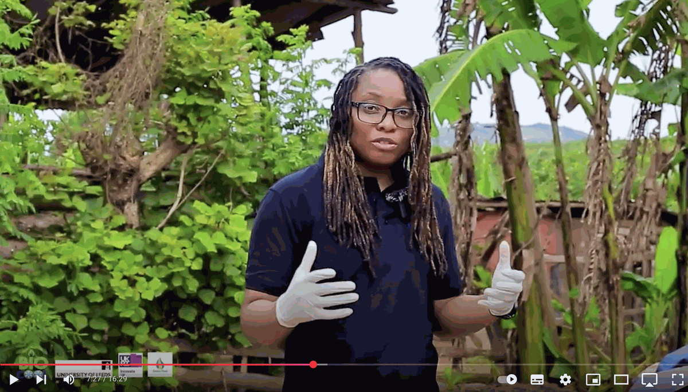
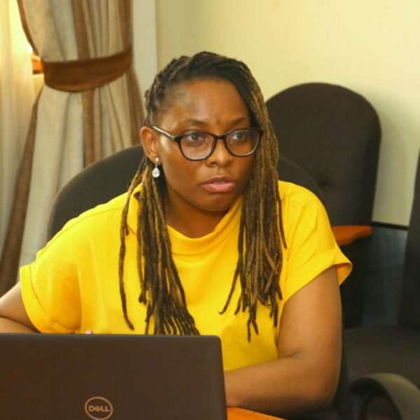
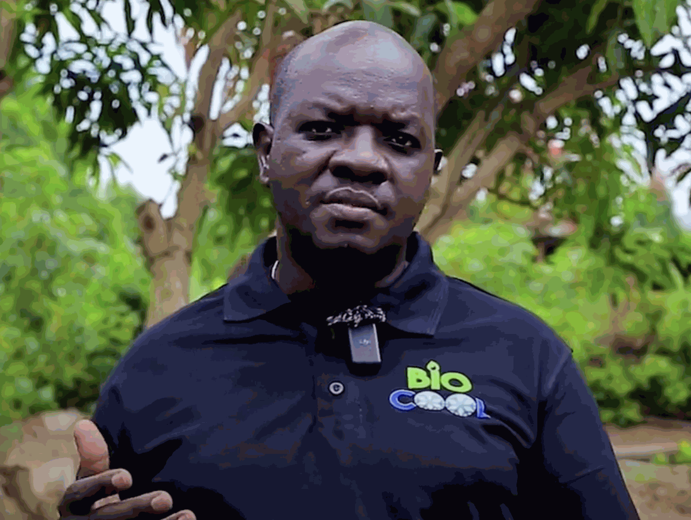
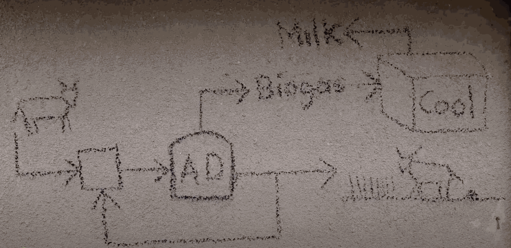
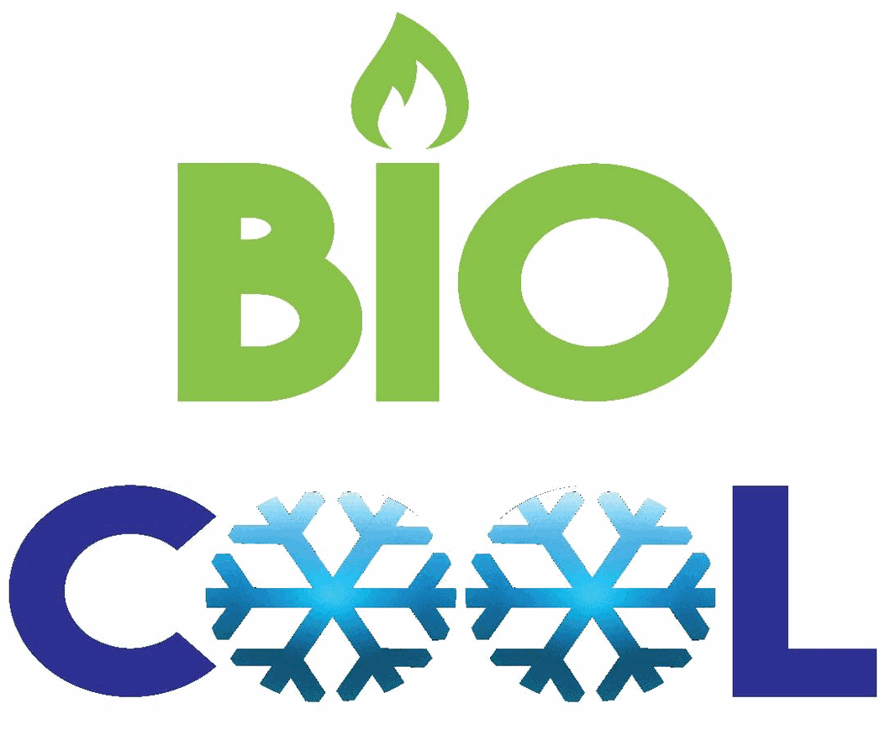
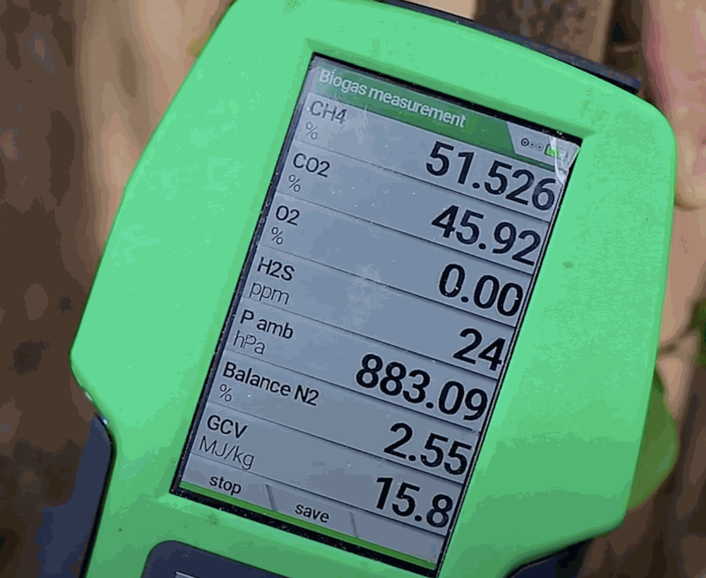
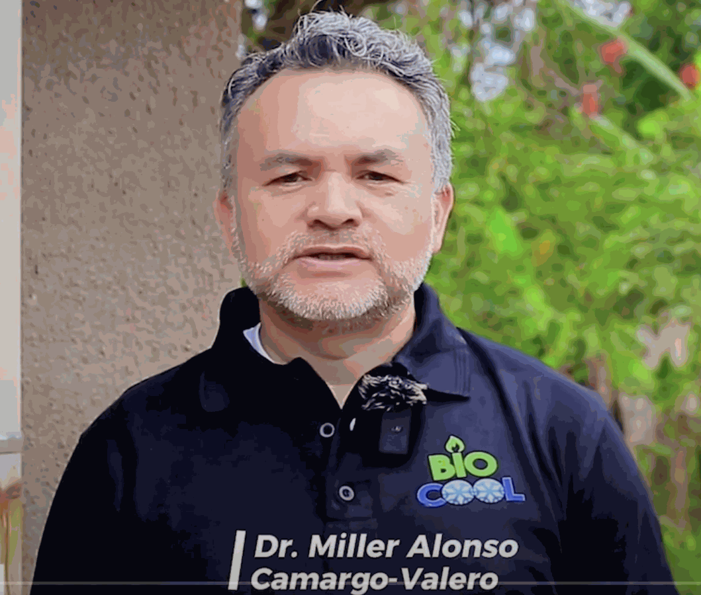

Project Overview
Phase 1 Feasibility (2024–2025): Horizon Europe / Innovate UK (£152,688)
Phase 2 Scale-Up (2025–2027): Ayrton Challenge Energy / Innovate UK (£1.75M)
Partners & Collaborators: GreenHeat Uganda, Makerere University, Ministry of Energy and Mineral Development Uganda, Crestanks Ltd
Principal Investigator: Dr Cynthia Kusin Okoro-Shekwaga
Co-Investigator: Dr Miller Alonso Camargo-Valero
BioCool tackles the technical and economic barriers limiting the widespread adoption of anaerobic digestion (AD) technology in producing biomethane for sustainable off-grid cooling among rural farming communities in Uganda and East Africa.
Uganda’s dairy sector contributes over 50% of agricultural GDP, yet around 70% of milk is sold raw through informal markets, largely due to the lack of reliable electricity and conventional refrigeration, leading to post-harvest spoilage and substantial income losses for smallholder farmers.
While more than 30,000 household and farm AD digesters have been installed across Uganda, many face barriers including variable feedstock quality, limited process control, and high capital costs for gas upgrading and refrigeration hardware. BioCool addresses these barriers by combining solar-assisted anaerobic digestion and low-cost biogas scrubbing with an Energy as a Service (EaaS) and Cooling as a Service (CaaS) model, transferring the capital and maintenance burden to the service provider so farmers pay per litre of milk cooled.
Following the successful 2024–2025 feasibility pilot at Kalerwe Market and rural dairy cooperatives, the team secured £1.75M in Ayrton Challenge Energy follow-on funding (Innovate UK) to scale biomethane-powered cooling hubs across Uganda.

Dr Cynthia Kusin Okoro-Shekwaga demonstrating the BioCool biomethane system
Research Team



GreenHeat Uganda & Makerere University
Project Delivery Partners
Multidisciplinary engineering and socio-economic collaborators at GreenHeat Uganda, Makerere University, and the Ministry of Energy and Mineral Development Uganda advancing user-defined Cooling as a Service (CaaS).
Key Research Areas
Anaerobic Digestion (AD)
Optimising AD processes to convert organic materials (cattle manure and market crop waste) into high-purity biomethane that powers off-grid absorption cooling units.
Energy as a Service (EaaS)
Shifting the techno-economic burden from smallholder farmers to energy providers, allowing end users to pay only for the fuel consumed while ensuring reliable service.
Cooling as a Service (CaaS)
Extending the EaaS model to include milk chilling and cold storage, enabling cost-effective off-grid cooling for rural dairy cooperatives and urban markets.
Food Security & Livelihoods
Enhancing dairy and agricultural value chains by reducing evening-milk spoilage, improving household incomes, and returning nutrient-rich digestate biofertiliser to soils.
Research in Action
A documentary showcasing the BioCool project, from stakeholder engagement and laboratory experiments at Leeds to pilot deployment in Uganda, highlighting how biomethane-powered cooling transforms off-grid dairy farming.
Research Gallery




Key Findings
Reduced Milk Spoilage
Reliable off-grid cooling captures evening milk collections that would otherwise go uncollected, reducing post-harvest losses and increasing smallholder dairy incomes.
Scalable Service Delivery
BioCool’s EaaS and CaaS models shift upfront capital and maintenance costs to specialist providers, making biomethane cooling viable for smallholder cooperatives.
Diesel Displacement & Clean Energy
Biomethane upgraded from organic market and farm waste replaces polluting diesel generators in off-grid milk chilling centres, cutting greenhouse gas emissions.
Circular Digestate Biofertiliser
Alongside clean cooling energy, pasteurised digestate from the reactors returns nitrogen, phosphorus, and organic carbon to depleted agricultural soils.
Interested in BioCool?
For more information about the BioCool project, opportunities for research collaboration, or our Spotlight story on Kalerwe Market and off-grid milk cooling, please get in touch.